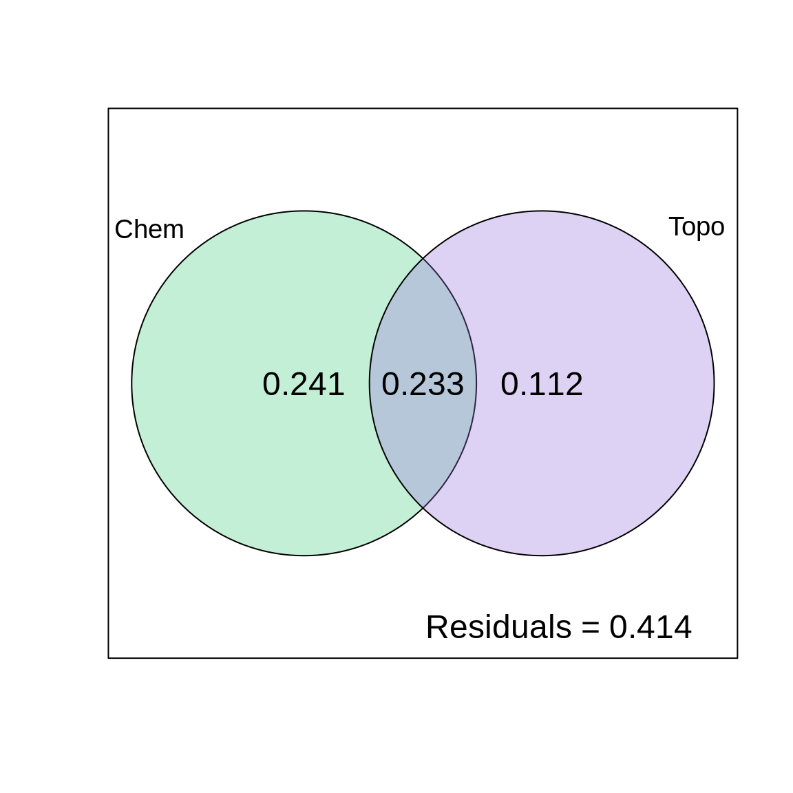
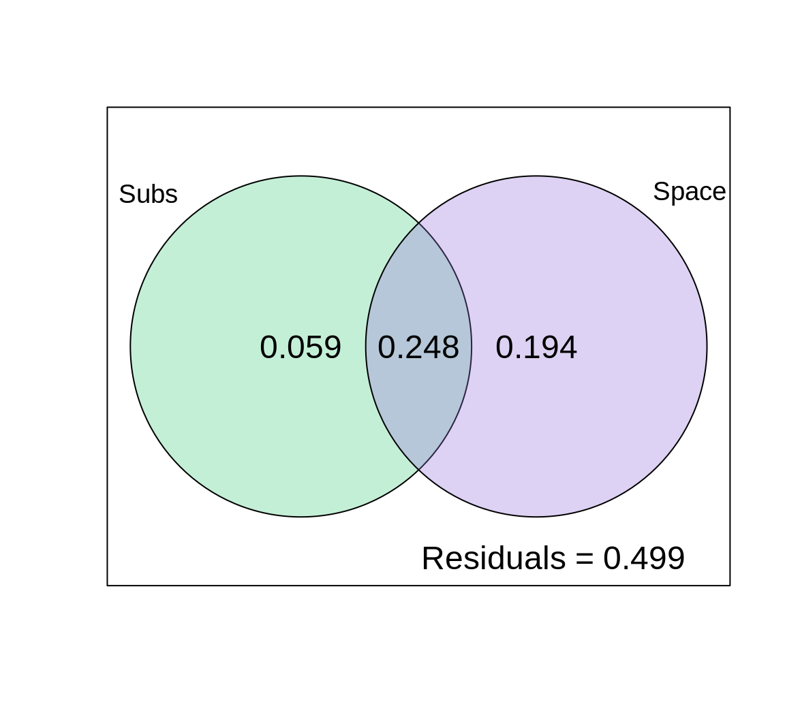

Chapter 8 Variation partitioning
Variation partitioning is a type of analysis that combines RDA and partial RDA to divide the variation of a response variable among two, three or four explanatory data sets. For example, you might want to partition the variation in a community matrix among a set of abiotic environmental variables, and a set of biotic variables. You could also partition this community variation among small-scale or large-scale variables, to test the effect of spatial scale on your community.

Figure 8.1: The basic structure of variation partitioning.
The results of variation partitioning analyses are traditionally represented by a Venn diagram, in which the percentage of explained variance by each explanatory data set is reported. In a case where we are partitioning the variation among two explanatory matrices, the result could be represented as follows:

Figure 8.2: Representing variation partitioning results.
Here,
- Fraction \([a + b + c]\) is the explained variance by \(X1\) and* \(X2\) together, calculated using a RDA of \(Y\) by \(X1 + X2\).
- Fraction \([d]\) is the unexplained variance by \(X1\) and \(X2\) together, obtained from the same RDA as above.
- Fraction \([a]\) is the explained variance by \(X1\) only, calculated using a partial RDA of \(Y\) by \(X1 | X2\) (controlling for \(X2\)).
- Fraction \([c]\) is the explained variance by \(X2\) only, calculated using a partial RDA of \(Y\) by \(X2 | X1\) (controlling for \(X1\)).
- Fraction \([b]\) is calculated by subtraction, i.e. \(b = [a + b] + [b + c] - [a + b + c].\) Because \([b]\) is not the result of an RDA, it cannot be tested for significance. It can also be negative, which indicates that the response matrix is better explained by the combination of \(X1\) and \(X2\) than by either matrix on its own.
8.1 Variation partitioning in R
To demonstrate how variation partitioning works in R, we will partition the variation of fish species composition between chemical and physiographic variables. The varpart() function from vegan makes this easy for us.
# Partition the variation in fish community composition
spe.part.all <- varpart(spe.hel, env.chem, env.topo)
spe.part.all$part # access results!## No. of explanatory tables: 2
## Total variation (SS): 14.07
## Variance: 0.50251
## No. of observations: 29
##
## Partition table:
## Df R.squared Adj.R.squared Testable
## [a+b] = X1 7 0.60579 0.47439 TRUE
## [b+c] = X2 3 0.41526 0.34509 TRUE
## [a+b+c] = X1+X2 10 0.73414 0.58644 TRUE
## Individual fractions
## [a] = X1|X2 7 0.24135 TRUE
## [b] 0 0.23304 FALSE
## [c] = X2|X1 3 0.11205 TRUE
## [d] = Residuals 0.41356 FALSE
## ---
## Use function 'rda' to test significance of fractions of interestYou can then visualise the results with the plot() function.
# plot the variation partitioning Venn diagram
plot(spe.part.all,
Xnames = c("Chem", "Topo"), # name the partitions
bg = c("seagreen3", "mediumpurple"), alpha = 80, # colour the circles
digits = 2, # only show 2 digits
cex = 1.5)
The chemical variables explain 24.1% of the variation in fish species composition, the topography variables explain 11.2% of the variation in fish species composition, and these two variable groups jointly explain 23.3% of the variation in fish species composition.
Be careful when reporting results of variation partitioning! The shared fraction [b] does not represent an interaction effect of the two explanatory matrices. Think of it as an overlap between \(X1\) and \(X2\). It represents the shared fraction of variation explained when the two are included in the model, meaning it is the portion of variation that cannot be attributed to \(X1\) or \(X2\) separately. In other words, the variation partitioning cannot disentangle the effects of chemistry and topography on 23.3% of the variation in the fish community composition.
8.2 Significance testing
The output from the varpart() function reports the adjusted \(R^2\) for each fraction, but you will notice that the table does not include any test of statistical significance. However, the Testable column identifies the fractions that can be tested for significance using the function anova.cca(), just like we did with the RDA!
X1 [a+b]: Chemistry without controlling for topography
## Permutation test for rda under reduced model
## Permutation: free
## Number of permutations: 999
##
## Model: rda(X = spe.hel, Y = env.chem)
## Df Variance F Pr(>F)
## Model 7 0.30442 4.6102 0.001 ***
## Residual 21 0.19809
## ---
## Signif. codes: 0 '***' 0.001 '**' 0.01 '*' 0.05 '.' 0.1 ' ' 1X2 [b+c] Topography without controlling for chemistry
## Permutation test for rda under reduced model
## Permutation: free
## Number of permutations: 999
##
## Model: rda(X = spe.hel, Y = env.topo)
## Df Variance F Pr(>F)
## Model 3 0.20867 5.918 0.001 ***
## Residual 25 0.29384
## ---
## Signif. codes: 0 '***' 0.001 '**' 0.01 '*' 0.05 '.' 0.1 ' ' 1X1 | X2 [a] Chemistry alone
## Permutation test for rda under reduced model
## Permutation: free
## Number of permutations: 999
##
## Model: rda(X = spe.hel, Y = env.chem, Z = env.topo)
## Df Variance F Pr(>F)
## Model 7 0.16024 3.0842 0.001 ***
## Residual 18 0.13360
## ---
## Signif. codes: 0 '***' 0.001 '**' 0.01 '*' 0.05 '.' 0.1 ' ' 1Recognize this? It’s a partial RDA!
X2 | X1 [c] Topography alone
## Permutation test for rda under reduced model
## Permutation: free
## Number of permutations: 999
##
## Model: rda(X = spe.hel, Y = env.chem, Z = env.topo)
## Df Variance F Pr(>F)
## Model 7 0.16024 3.0842 0.001 ***
## Residual 18 0.13360
## ---
## Signif. codes: 0 '***' 0.001 '**' 0.01 '*' 0.05 '.' 0.1 ' ' 1All of the testable fractions in the variation partitioning are statistically significant!
8.3 Challenge 3
Partition the variation in the mite species data according to substrate variables (SubsDens, WatrCont) and significant spatial variables.
- What proportion of the variation is explained by substrate variables? By space?
- Which individual fractions are significant?
- Plot your results!
Load the spatial variables:
Recall some useful functions:
8.3.1 Challenge 3: Solution
Step 1: Forward selection of significant spatial variables.
There are a lot of spatial variables in this dataset (22!). We should select the most important ones, to avoid overloading the model.
# Step 1: Forward selection!
# Write full RDA model with all variables
full.spat <- rda(mite.spe.hel ~ ., data = mite.pcnm)
# Forward selection of spatial variables
spat.sel <- ordiR2step(rda(mite.spe.hel ~ 1, data = mite.pcnm),
scope = formula(full.spat), R2scope = RsquareAdj(full.spat)$adj.r.squared,
direction = "forward", trace = FALSE)
spat.sel$call## rda(formula = mite.spe.hel ~ V2 + V3 + V8 + V1 + V6 + V4 + V9 +
## V16 + V7 + V20, data = mite.pcnm)Step 2: Group variables of interest.
# Step 2: Group variables of interest.
# Subset environmental data to retain only substrate
# variables
mite.subs <- subset(mite.env, select = c(SubsDens, WatrCont))
# Subset to keep only selected spatial variables
mite.spat <- subset(mite.pcnm, select = names(spat.sel$terminfo$ordered))
# a faster way to access the selected variables!Step 3: Partition the variation in species abundances.
# Step 3: Partition the variation in species abundances.
mite.part <- varpart(mite.spe.hel, mite.subs, mite.spat)
mite.part$part$indfract # access results!## Df R.squared Adj.R.squared Testable
## [a] = X1|X2 2 NA 0.05901929 TRUE
## [b] 0 NA 0.24765221 FALSE
## [c] = X2|X1 10 NA 0.19415929 TRUE
## [d] = Residuals NA NA 0.49916921 FALSE- What proportion of the variation is explained by substrate variables? 5.9%
- What proportion of the variation is explained by spatial variables? 19.4%
Step 4: Which individual fractions are significant?
[a]: Substrate only
# Step 4: Significance testing [a]: Substrate only
anova.cca(rda(mite.spe.hel, mite.subs, mite.spat))...
## Model: rda(X = mite.spe.hel, Y = mite.subs, Z = mite.spat)
## Df Variance F Pr(>F)
## Model 2 0.025602 4.4879 0.001 ***
## Residual 57 0.162583
...[c]: Space only
...
## Model: rda(X = mite.spe.hel, Y = mite.spat, Z = mite.subs)
## Df Variance F Pr(>F)
## Model 10 0.10286 3.6061 0.001 ***
## Residual 57 0.16258
...Step 5: Plot the variation partitioning results.
# Step 5: Plot
plot(mite.part,
digits = 2,
Xnames = c("Subs", "Space"), # label the fractions
cex = 1.5,
bg = c("seagreen3", "mediumpurple"), # add colour!
alpha = 80) # adjust transparency
So, what can we say about the effects of substrate and space on mite species abundances?
Hint: Why is the model showing such an important effect of space?
Space explains a lot of the variation in species abundances here: 19.4% (p = 0.001) of the variation is explained by space alone, and 24.8% is jointly explained by space and substrate. Substrate only explains ~6% (p = 0.001) of the variation in community composition across sites on its own! Also note that half of the variation is not explained by the variables we included in the model (look at the residuals!), so the model could be improved.
This large effect of space could be a sign that some spatial ecological process is important here (like dispersal, for example). However, it could also be telling us that we are missing an important environmental variable in our model, which itself varies in space!